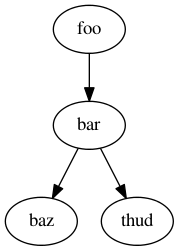

Documenting Ceph¶
Code Documentation¶
C and C++ can be documented with Doxygen, using the subset of Doxygen markup supported by Breathe.
The general format for function documentation is:
/**
* Short description
*
* Detailed description when necessary
*
* preconditons, postconditions, warnings, bugs or other notes
*
* parameter reference
* return value (if non-void)
*/
This should be in the header where the function is declared, and functions should be grouped into logical categories. The librados C API provides a complete example. It is pulled into Sphinx by librados.rst, which is rendered at Librados (C).
Drawing diagrams¶
Graphviz¶
You can use Graphviz, as explained in the Graphviz extension documentation.

Most of the time, you’ll want to put the actual DOT source in a separate file, like this:
.. graphviz:: myfile.dot
Blockdiag¶
If a use arises, we can integrate Blockdiag. It is a Graphviz-style declarative language for drawing things, and includes:
- block diagrams: boxes and arrows (automatic layout, as opposed to Ditaa)
- sequence diagrams: timelines and messages between them
- activity diagrams: subsystems and activities in them
- network diagrams: hosts, LANs, IP addresses etc (with Cisco icons if wanted)
Inkscape¶
You can use Inkscape to generate scalable vector graphics. http://inkscape.org for restructedText documents.
If you generate diagrams with Inkscape, you should commit both the Scalable Vector Graphics (SVG) file and export a Portable Network Graphic (PNG) file. Reference the PNG file.
By committing the SVG file, others will be able to update the SVG diagrams using Inkscape.
HTML5 will support SVG inline.